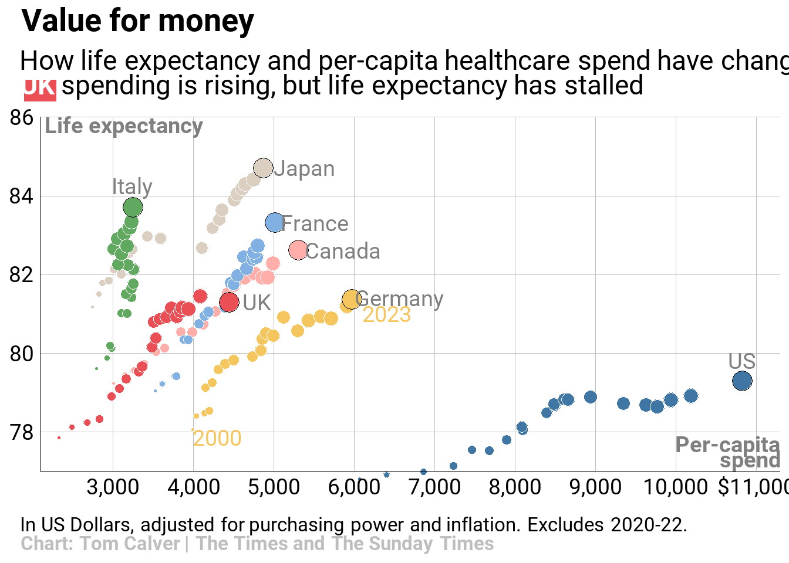

This is a collection of plots from the Rifiomonas website HERE purely for reference purposes
73.1 Advanced Barplot
Code
library(tidyverse)library(showtext)library(ggtext)library(showtext)font_add_google("Libre Franklin", "franklin")font_add_google("Gelasio", "gelasio")showtext_opts(dpi =300)showtext_auto()data <-tribble(~category,~gain,~none,~lose,~group,"Total",21,37,41,"total","Men",24,42,34,"gender","Women",18,34,47,"gender","White",24,43,33,"race","Black",11,20,66,"race","Hispanic",17,29,52,"race","Asian*",15,38,47,"race","Ages 18-29",22,30,47,"age","30-49",22,34,42,"age","50-64",21,42,37,"age","65+",17,43,39,"age","Postgrad",17,38,45,"education","College grad",17,43,39,"education","Some college",22,33,43,"education","HS or less",23,37,40,"education","Rep/Lean Rep",35,51,13,"politics","<span style='color:gray50'>Conserv</span>",39,54,6,"politics","<span style='color:gray50'>Mod/Lib</span>",29,47,23,"politics","Dem/Lean Dem",7,23,69,"politics","<span style='color:gray50'>Cons/Mod</span>",8,25,66,"politics","<span style='color:gray50'>Liberal</span>",6,20,74,"politics") %>%mutate(group =factor( group,levels =c("total", "gender", "race","age", "education", "politics")),category =factor(category, levels =rev(category)))data %>%pivot_longer(-c(category, group),names_to ="effect", values_to ="percent") %>%mutate(effect =factor(effect, levels =c("lose", "none", "gain"))) %>%ggplot(aes(x = percent, y = category, fill = effect, label = percent)) +geom_col(width =0.7) +geom_text(position =position_stack(vjust =0.5),family ="franklin", size =6, size.unit ="pt") +facet_grid(group~., scales ="free_y", space ="free_y") +coord_cartesian(expand =FALSE, clip ="off") +scale_fill_manual(name =NULL,breaks =c("gain", "none", "lose"),values =c("#D0A62D", "#DBD9C6", "#E3CA83"),labels =c("Gain influence", "Not be affected", "Lose influence")) +labs(title ="How Americans feel people like them<br>will fare under the Trump administration",subtitle ="*% who say **people like yourself** will in<br>Washington with Donald Trump taking office*",caption ="\\* Estimates for Asian adults are representative of English speakers<br>only.<br>Note: No answer responses are not shown.<br>Source: Survey of U.S. adults conducted Jan. 27-Feb. 2, 2025.<br><br>**<span style='color:black'>PEW RESEARCH CENTER</span>**",x =NULL,y =NULL) +theme(text =element_text(family ="franklin"),legend.position ="top",legend.justification.top ="right",legend.text =element_text(size =6, margin =margin(l =2)),legend.key.size =unit(5, "pt"),legend.key.spacing.x =unit(2, "pt"),legend.box.spacing =unit(8, "pt"),legend.margin =margin(r =0),panel.grid =element_blank(),panel.background =element_blank(),strip.text =element_blank(),axis.ticks =element_blank(),axis.text.x =element_blank(),axis.text.y =element_markdown(size =6, color ="black"),plot.title.position ="plot",plot.title =element_markdown(face ="bold", size =9, lineheight =1.4),plot.subtitle =element_markdown(family ="gelasio", size =8,color ="gray40", lineheight =1.2,margin =margin(b =8)),plot.caption.position ="plot",plot.caption =element_markdown(hjust =0, size =5.5, lineheight =1.4,color ="gray40", margin =margin(t =16)),plot.margin =margin(t =10, r =8, b =10, l =3),panel.spacing.y =unit(15, "pt"))
73.2 Showing Relationships
Code
font_add_google("Roboto", "roboto")showtext_auto()showtext_opts(dpi =300)country_labels <-tribble(~country, ~year, ~spend, ~life_expectancy, ~xnudge, ~ynudge,"France", 2023, 5014, 83.3, 500, 0,"Germany",2023, 5971, 81.4, 600, 0,"UK", 2023, 4444, 81.3, 350, 0,"Italy", 2023, 3249, 83.7, 0, 0.55,"Canada", 2023, 5307, 82.6, 550, 0,"Japan", 2023, 4874, 84.7, 500, 0,"US", 2023, 10827, 79.3, 0, 0.5)read_tsv("https://datawrapper.dwcdn.net/Bxhol/9/dataset.csv") %>%select(country, year, spend,life_expectancy = le) %>%mutate(this_year = year ==2023,my_size = year %%2000,my_size =if_else(year ==2023, 40, my_size +1),country =factor(country,levels =c("Canada", "France", "Germany", "Japan", "Italy", "UK", "US"))) %>%arrange(country, year) %>%ggplot(aes(x = spend, y = life_expectancy,color = this_year, fill = country, size = my_size)) +geom_point(shape =21, stroke =0.25) +geom_text(data = country_labels,aes(x = spend, y = life_expectancy, label = country),nudge_x = country_labels$xnudge,nudge_y = country_labels$ynudge,family ="roboto", size =9, size.unit ="pt", inherit.aes =FALSE, color ="gray50") +annotate(geom ="rect",xmin =1900, xmax =2300, ymin =86.4, ymax =86.95,fill ="#E94F55") +annotate(geom ="text",x =c(2150, 11300),y =c(85.8, 77.5),hjust =c(0, 1), label =c("Life expectancy", "Per-capita\nspend"),size =9, size.unit ="pt", color ="gray50",lineheight =0.9, fontface ="bold", family ="roboto") +annotate(geom ="text",x =c(4300, 6400),y =c(77.85, 81),label =c(2000, 2023),# fontface = "bold", color ="#F5C55E", family ="roboto", size =9, size.unit ="pt") +scale_color_manual(breaks =c(FALSE, TRUE),values =c("white", "black")) +scale_fill_manual(breaks =c("US", "France", "Italy", "Germany","UK", "Canada", "Japan"),values =c("#4076A4", "#80B1E2", "#61A961", "#F5C55E","#E94F55", "#FFAEA9", "#DACFC0")) +scale_size_continuous(range =c(1, 6)) +scale_x_continuous(breaks =seq(3000, 11000, 1000),labels =c(format(seq(3000, 10000, 1000),big.mark =",", trim =TRUE),"$11,000")) +scale_y_continuous() +coord_cartesian(xlim =c(2100, 11300),ylim =c(77, 86), expand =FALSE, clip ="off") +labs(title ="Value for money",subtitle ="How life expectancy and per-capita healthcare spend have changed since 2000.<br><span style='color:white'>**UK**</span> spending is rising, but life expectancy has stalled",caption ="In US Dollars, adjusted for purchasing power and inflation. Excludes 2020-22.<br><span style='color:gray'>**Chart: Tom Calver | The Times and The Sunday Times**</span>" ) +theme(text =element_text(family ="roboto"),plot.title =element_text(face ="bold", size =13,margin =margin(l =8, b =5)),plot.subtitle =element_markdown(lineheight =1.3,margin =margin(t =3, l =8, b =11)),plot.title.position ="plot",plot.caption.position ="plot",plot.caption =element_markdown(hjust =0, size =8, lineheight =1.5,margin =margin(t =12, l =8)),legend.position ="none",axis.text =element_text(color ="black"),axis.ticks =element_blank(),axis.line =element_line(linewidth =0.25),axis.title =element_blank(),panel.grid.minor =element_blank(),panel.grid.major =element_line(linewidth =0.25, color ="gray"),panel.background =element_rect(fill ="white") )
Rows: 147 Columns: 6
── Column specification ────────────────────────────────────────────────────────
Delimiter: "\t"
chr (2): country, label
dbl (4): year, spend, le, size
ℹ Use `spec()` to retrieve the full column specification for this data.
ℹ Specify the column types or set `show_col_types = FALSE` to quiet this message.

73.3 Boxplot to Barplot
Code
font_add_google("Libre Franklin", "franklin")font_add_google("Gelasio", "gelasio")showtext_opts(dpi =300)showtext_auto()get_label <-function(x){if_else(x ==0, "", as.character(abs(x))) }data <-tribble(~category,~lose,~gain,~none,"Business corporation",11,70,18,"Wealthy people",9,65,26,"White people",5,60,33,"Men",8,55,36,"The military",21,57,21,"Evangelical Christians",14,48,36,"<span style='color:white'>Dummy1</span>", 0, 0, 0,"Older people",37,28,33,"Younger people",39,27,33,"Children",41,22,36,"Asian people",46,14,39,"<span style='color:white'>Dummy2</span>", 0, 0, 0,"Women",51,19,29,"Poor people",56,23,20,"Unions",50,16,32,"Black people",53,16,31,"Hispanic people",62,14,24,"Gay and lesbian people",76,4,19,"Transgender people",84,3,12,"<span style='color:white'>Dummy3</span>", 0, 0, 0,"People like yourself",41,21,37) %>%mutate(category =factor(category, levels =rev(category)))offset <-5right <- data %>%select(category, none) %>%mutate(xmin =max(data$gain) + offset,xmax = xmin + none,x = (xmin + xmax) /2)data %>%select(-none) %>%mutate(lose =-lose) %>%pivot_longer(-category, names_to ="effect", values_to ="percent") %>%mutate(x_label =case_when( category =="White people"& effect =="lose"~-10, category =="Men"& effect =="lose"~-13, category =="Gay and lesbian people"& effect =="gain"~9, category =="Transgender people"& effect =="gain"~7,TRUE~ percent /2)) %>%ggplot(aes(x = percent, y = category, fill = effect, label =get_label(percent))) +geom_col(width =0.7) +geom_text(aes(x = x_label), family ="franklin",size =10, size.unit ="pt") +geom_crossbar(data = right,mapping =aes(x = x, xmin = xmin, xmax = xmax, y = category,fill ="none"), inherit.aes =FALSE, width =0.7, color =NA) +geom_text(data = right, family ="franklin",mapping =aes(x = x, y = category, label =get_label(none)), inherit.aes =FALSE, size =10, size.unit ="pt") +geom_vline(xintercept =0, color ="#858686") +annotate(geom ="segment",x =-180, xend =118,y =c(1.7, 9.7, 14.7),color ="#858686",linetype =c("solid", "11", "11")) +annotate(geom ="text",x =c(-23, 35, 95),y =22.3,label =c("Lose\ninfluence", "Gain\ninfluence", "Not be\naffected"),fontface ="bold", family ="franklin", lineheight =1,size =9, size.unit ="pt") +scale_fill_manual(breaks =c("lose", "gain", "none"),values =c("#E3CA82", "#CFA72F", "#C1BB9D") ) +coord_cartesian(clip ="off", xlim =c(-90, 115), ylim =c(1.1, 21)) +labs(title ="Which groups do Americans expect to gain influence<br>— and lose it — in Trump's second term?",subtitle ="% of U.S. adults who say each group will ____ in Washington with Donald<br>Trump taking office",caption ="Note: No answer responses are not shown.<br>Source: Survey of U.S. adults conducted Jan. 27-Feb. 2, 2025.<br>**<span style='color:black'>PEW RESEARCH CENTER</span>**" ) +theme(text =element_text(family ="franklin"),legend.position ="none",axis.text.y =element_markdown(color ="black"),axis.text.x =element_blank(),axis.ticks =element_blank(),axis.title =element_blank(),panel.grid =element_blank(),panel.background =element_blank(),plot.title.position ="plot",plot.title =element_markdown(face ="bold", lineheight =1.3),plot.subtitle =element_markdown(family ="gelasio", face ="italic",size =10, lineheight =1.4,color ="gray40", margin =margin(t =4, b =34)),plot.caption.position ="plot",plot.caption =element_markdown(hjust =0, color ="gray40", size =8.5, lineheight =1.5),plot.margin =margin(t =15, l =2, b =20) )